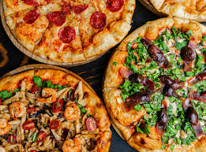

Pizza Recipe

Ingredients:
- 1 pizza dough (store-bought or homemade)
- 1/2 cup pizza sauce
- 1 1/2 cups shredded mozzarella cheese
- 1/2 cup sliced pepperoni
- 1/4 cup sliced black olives
- 1/4 cup sliced green bell pepper
- 1/4 cup sliced red onion
- 1 teaspoon dried oregano
- 1/2 teaspoon garlic powder
- 1/4 teaspoon red pepper flakes (optional)
- Fresh basil leaves for garnish (optional)
Instructions:
- Preheat your oven to 475°F (245°C). If you have a pizza stone, place it in the oven to heat up.
- Roll out the pizza dough on a lightly floured surface to your desired thickness. Transfer the rolled-out dough to a pizza peel or baking sheet lined with parchment paper.
- Spread the pizza sauce evenly over the dough, leaving a small border around the edges for the crust.
- Sprinkle the shredded mozzarella cheese over the sauce.
- Add the sliced pepperoni, black olives, green bell pepper, and red onion evenly over the cheese.
- Sprinkle the dried oregano, garlic powder, and red pepper flakes (if using) over the toppings.
- If using a pizza stone, carefully slide the pizza onto the preheated stone in the oven. If using a baking sheet, place it directly in the oven.
- Bake for 10-12 minutes, or until the crust is golden and the cheese is bubbly and slightly browned.
- Remove the pizza from the oven and let it cool for a few minutes. Garnish with fresh basil leaves if desired.
- Slice and serve hot. Enjoy your homemade pizza!
Back to All